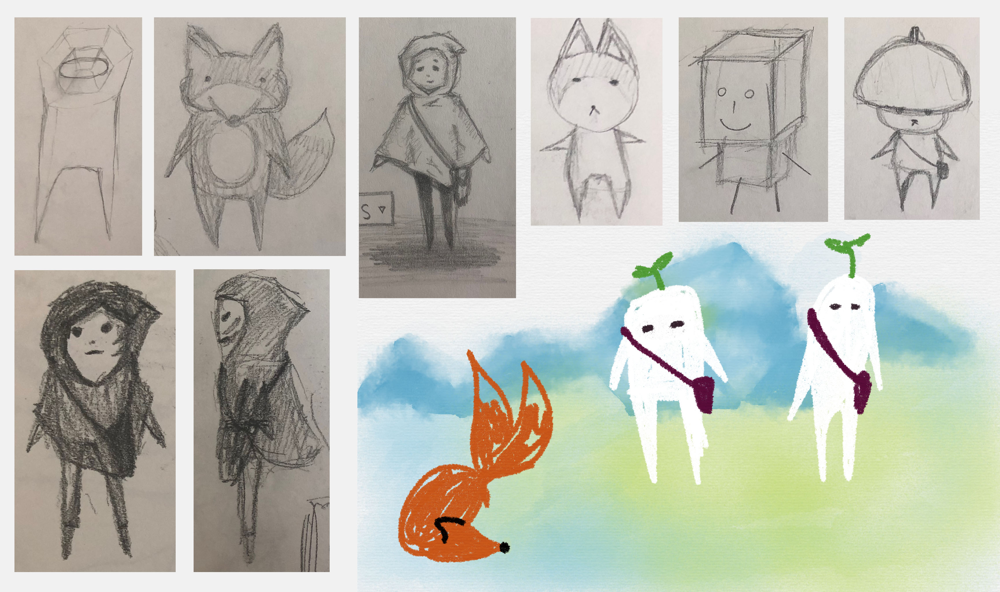
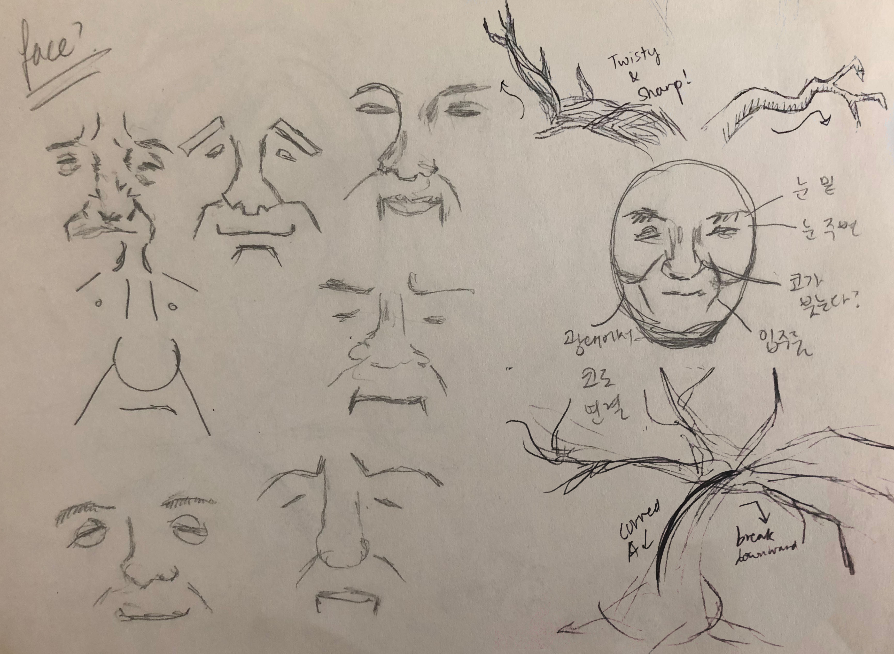
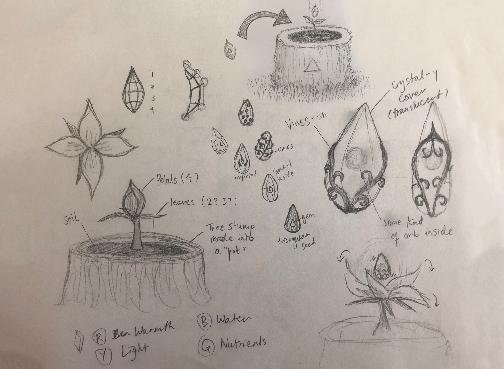
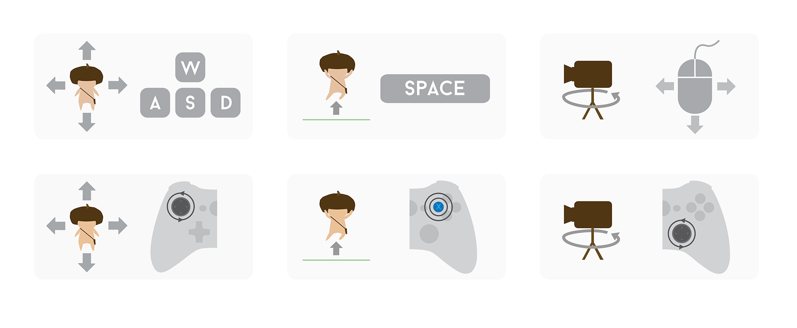

Jenny Hyun Ji Seong
Art. Design. Code.

Kodama and the Magic Seeds
Character Designer and Writer, 2016
WEBSITE
Kodama and the Magic Seeds is a relaxing game with calming music and low-poly graphics. Made with Unity3D and Maya, I developed the game along with Sean Oh and Armin Mahban.
Concepts & Design
The most important keyword of the game was “calming.” We wanted to create a game that can be enjoyed by everyone from first-time game players to intense gamers. After some meetings, we agreed that a good place to start would be about a magical forest, and the overall gameplay would be puzzles.
Story
Kodama is a child of the forest created by the Mother Tree. He would talk to and take care of the flowers and animals of the forest during the day, and return to Mother at night to sleep peacefully on her roots.
One day, Kodama returned home and noticed something was wrong. The luscious leaves that once covered Kodama safely at night were no longer on Mother’s gentle branches. Mother groaned in pain, and slowly spoke out to little Kodama who was staring from a distance with fear.
“Kodama, my child, do not fret. I am a little sick, so I need your help.”
“Tell me Mother, how can I help?”
“Long ago, I placed some of my magical powers throughout the forest in magic seeds. These seeds of magic are hidden in special flowers that grow on stumps. They will only open when you gather the power of crystals that grow in the forest. I need you to go collect them for me, so I may be reborn from their powers.”
“I will go right away, Mother.”
“You will need to venture far and beyond the forest you know. There will be many challenges along the way, so please, please be safe...”
That’s how Kodama began his journey to save all that he loved.

See the Storyboard.
Character
After we flushed out the story, we knew that the character had to be somewhat connected to a forest. I knew that I wanted the character to be cute: other than that, I explored a bunch of ideas from animals to sprouts to simple blocks.
The final design turned out to be a little figure with a huge acorn top as its hat. Some people asked me if it was a mushroom... But I guess it works since mushrooms and acorns are both from the forest :P
I also explored a few designs for Mother Tree’s face and branch design. But modeling an old person’s face using low poly was not something very easy, so we decided to skip on that.
Magic Seed
The magic seeds and their hosting flowers were one of the most important designs in the game. I wanted to incorporate both the organic nature of forests yet add a touch of something else to emphasize the “magic” they held.

Game UI Elements
Main UI elements were created in Adobe Illustrator to guide the user in different steps along the gameplay. I also considered creating UI elements that look like sketches, but it did not go well with the low-poly look of the rest of the game.
Conclusion
The game can be downloaded from the website here. It’s a demo version with just a few levels, but it really helped us understand the basics of game development. As someone who loves playing games, I have so much respect for game designers and developers, and hope to create more games in the future.
Interested in other game projects?
Check out these pages!